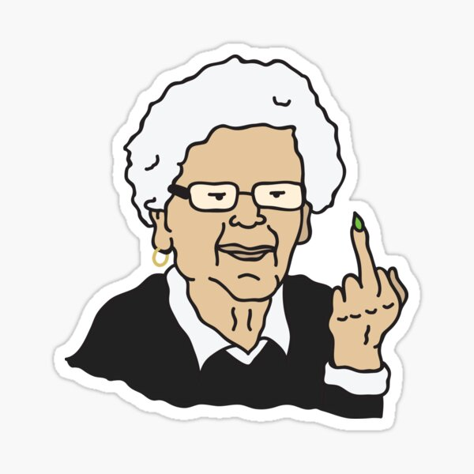

You decide that fighting what ever this is, is not the smartest choice.
You run back towards your house, fumbling in your pocket for your keys.
As you reach your next door neighbours house, you see the curtain pull back
revealing Mrs O' Brian. You stop to hammer on her door.
"Let me in", you scream," there is a lunatic out here"
Mrs O'Brian looks directly at you, she then points her finger at her recycle
bin which is oveflowing with empty pizza boxes and coke cans.
She then points at you, extends her middle finger and disappears behind the
curtains.

You don't have time to curse her out as the man is getting closer.
You retrive your keys and manage to open your door in time. You slam it shut
just as the man reaches out to you. You breath a sigh of relief, your safe,
for now